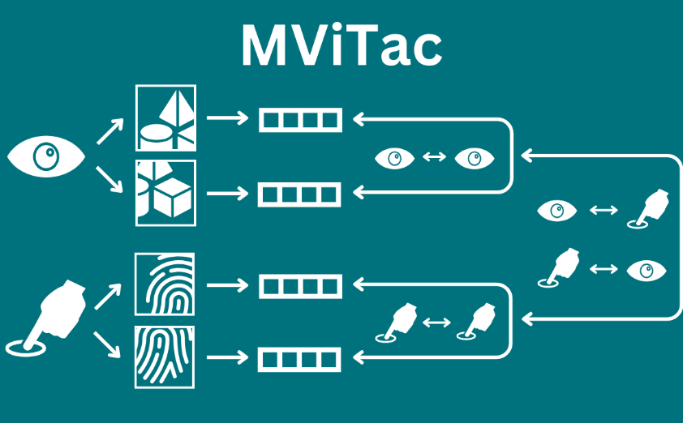
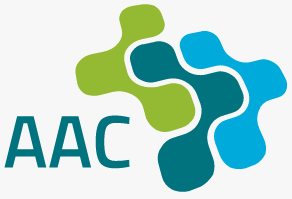
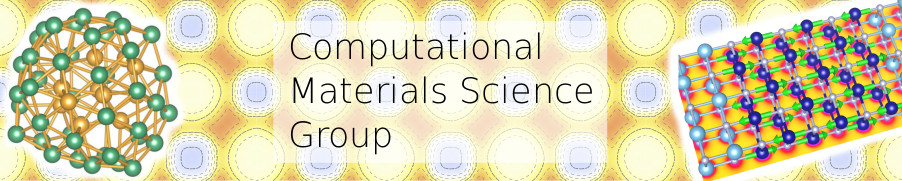
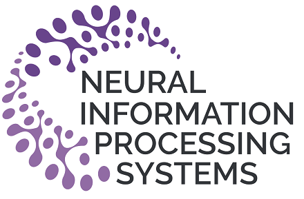
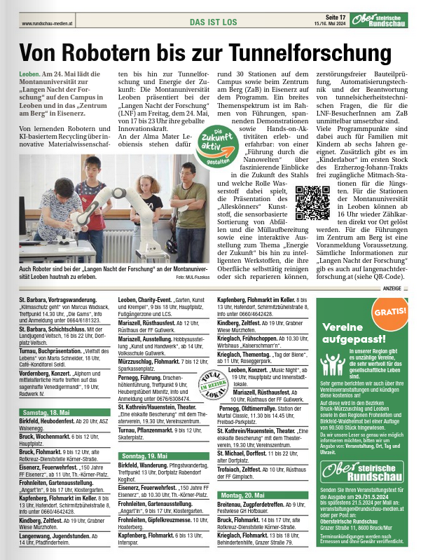
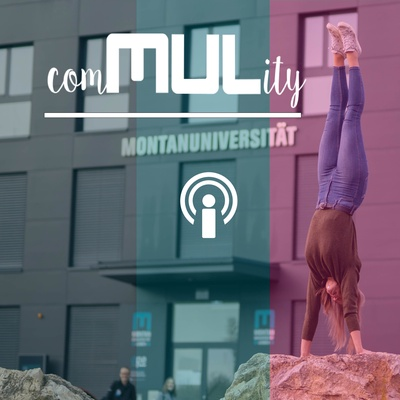

|
Vedant Dave Hey! I'm a Ph.D. student at Cyber-Physical-Systems Lab at Montanuniversität Leoben in Austria and advised by Elmar Rueckert. I'm broadly interested in finding better representations from multiple sensory modalities under noisy conditions. My work involves unsupervised RL, robust representation in RL, Multimodality, and Robot Manipulation. I received my Master's degree in Automation and Robotics from Technische Universität Dortmund in 2021, focusing on Robotics and Artificial Intelligence. My thesis, entitled “Model-agnostic Reinforcement Learning Solution for Autonomous Programming of Robotic Motion,” was completed at Mercedes-Benz AG, where I implemented reinforcement learning for motion planning of manipulators in complex environments. Prior to this, I was fortunate to work as a research intern with Leonel Rozo at the Bosch Center for Artificial Intelligence, where I worked on Probabilistic Movement Primitives on Riemannian Manifolds. |
{kind=link}
Publications and Preprints(* indicates equal contribution) |
 |
Information-Theoretic World Model learning for Denoised Predictions
Vedant Dave, Elmar Rueckert arxiv 2024 paper DPI is an information-theoretic approach for reinforcement learning that minimizes past information while retaining future-relevant data, enabling denoised predictions. Using Soft Actor-Critic agents with an auxiliary loss, the method outperforms nine state-of-the-art approaches in complex environments with natural video backgrounds. |
 |
M2CURL: Sample-Efficient Multimodal Reinforcement Learning via Self-Supervised Representation Learning for Robotic Manipulation
Fotios Lygerakis, Vedant Dave, Elmar Rueckert IEEE International Conference on Ubiquitous Robots (UR) 2024 ProxyTouch Workshop, ICRA 2024 project page / paper M2CURL builds on MViTac to improves RL by efficiently integrating visual and tactile representations. It accelerates learning in downstream manipulation tasks. |
|

|
Multimodal Visual-Tactile Representation Learning through Self-Supervised Contrastive Pre-Training
Vedant Dave*, Fotios Lygerakis*, Elmar Rueckert IEEE International Conference on Robotics and Automation (ICRA) 2024 project page / code / paper / video MViTac is self-supervised approach that integrates vision and tactile modalities using contrastive learning. MViTac utilizes intra- and inter-modality relationships to learn a shared representation space. Experiments show that MViTac outperforms state-of-the-art methods in downstream tasks, which are performed by linear probing. |
 |
Can we infer the full-arm manipulation skills from tactile targets?
Vedant Dave, Elmar Rueckert Workshop on Advances in Close Proximity Human-Robot Collaboration, Humanoids 2022 paper This paper contains late-breaking results for TacProMPs, which learns and predicts complex arm movements based on tactile responses. Experiments were conducted on the real robot with a wide variety of objects. |
 |
Predicting full-arm grasping motions from anticipated tactile responses
Vedant Dave, Elmar Rueckert IEEE-RAS International Conference on Humanoid Robots (Humanoids) 2022 (Oral Presentation) paper / video TacProMPs learns and predicts complex arm movements based on tactile responses, particularly for manipulating non-uniform objects, demonstrating adaptability diverse grasping scenarios. |
 |
Orientation Probabilistic Movement Primitives on Riemannian Manifolds
Leonel Rozo*, Vedant Dave* Conference on Robot Learning (CoRL) 2022 project page / paper This paper introduces a Riemannian formulation of ProMPs for encoding and retrieving quaternion trajectories, enabling full-pose robot motions in operational spaces. This method builds on Riemannian manifold theory and exploits multilinear geodesic regression for estimating the ProMPs parameters. |
Industrial Collaborations |
|
Stahl- und Walzwerk Marienhütte GmbH
Consultant Predicting Yield Strength of different materials from production process. Designing Neural Networks and optimization. Found out error in measurement inaccuracy from data analysis. |
Academic Collaborations |
|
A Reinforcement Learning Approach for Decision-Making in Wells Paper Upcoming! This research evaluates hole conditioning operations in wellbore drilling, focusing on activities like circulation, reaming, and washing to ensure well integrity. An agent is trained with model-free RL coming from the online data from the real-world scenarios. |
|  |
Green Facade Paper Upcoming!
Coding and Supervision This study predicts the floor level from the distribution of TCEs (Li, Be, V, Ga, Ge, Nb, Sb, Te, Ta, Tl, Bi, and REYs) in Vienna's urban aerosol. |
|  |
Physics-informed neural network for predicting Gibbs free energy Paper Upcoming!
Coding and Supervision A physics-informed neural network combined with the CALPHAD formalism predicts Gibbs energy in alloys by determining the Redlich-Kister parameter using novel descriptors. This method enhances CALPHAD parameterization, expediting materials development and phase stability determination with high accuracy and potential. |
Teaching Experience |
|
Tutorial, Introduction to Machine Learning Lab SS 2024
Teaching Assistant, Introduction to Python WS 2023 Teaching Assistant, Cyber-Physical Systems Lab WS 2022 |
Reviewing Services |
|  |
2024: NeurIPS, ECAI, CoRL, IROS, BioRob
|
Media |
|  |  |
|
|